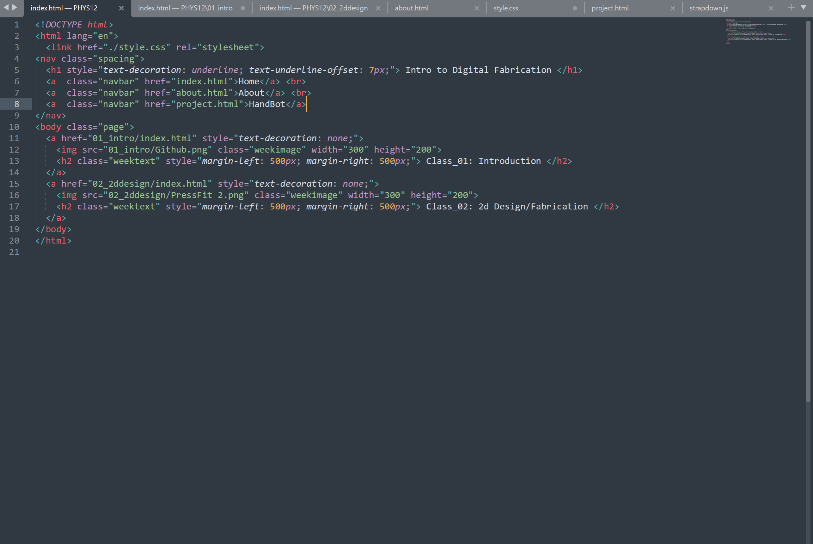
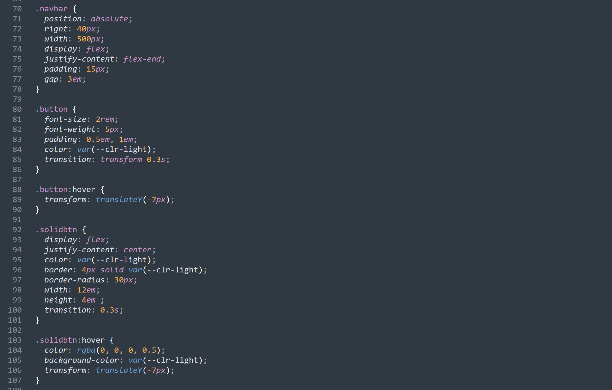

This website was made to document class learning and experiences while creating a portfolio of work done in the class, along with a final project idea and some personal information to introduce myself. To do this, I utiilized HTML5 and CSS3 to create a website from scratch, hosting it on GitHub pages. Using Sublime text as my choice of text editor, I made a sleek and organized website design.
These HTML snippets were then styled using CSS styles, including many classes that utilized flexbox for alignments and transitions/animations for responsiveness. Flexbox allows for easy alignment of elements for documentation within containers, creating an easy to read and more importantly, easy to manage design.
